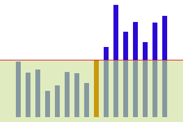

Статья посвящена алгоритму Быстрой Сортировки или Сортировке по Хоару, в ней подробно описывается алгоритм с детальным разбором. Он не особо отличается от тех, которые Вы изучали ранее. Сложность его максимального случая такая же, что и у других алгоритмов сортировки, но он представляет ценность, тем что массив фрагментируем.

Алгоритмы - Алгоритмы сортировки #3, Быстрая Сортировка (QuickSort), Сортировка по Хоару.
1. История.
Быстрая Сортировка разработана английским информатиком Чарльзом Хоаром во время его работы в МГУ в 1960 году. Сэр Чарльз Энтони Ричард Хоар родился 11 января 1934 года в Шри-Ланка.
2. Первое объяснение.
Сам алгоритм довольно прост: Сначала берём любой элемент массива, к примеру последний, располагаем слева от него элементы меньше его, а справа от него — больше или равно. Повторяем алгоритм для левой и правой части, не включая тот самый элемент. Это алгоритм сортировки от меньшего к большему. Рассмотрим идею одного шага далее на рисунке:

Рис. 1. Пример расположения элементов в быстрой сортировке.
Далее более подробно формализуем алгоритм.
3. Второе объяснение.
Сам алгоритм состоит из двух частей: разбиения на две части и рекурсии вызова самого себя для разбиений.
Алгоритм разбиения (partition) выглядит так (от меньшего к большему):
- Входные данные: arr — массив для сортировки, low — нижний индекс элемента массива, high — индекс последнего элемента.
- 1. Получаем значение последнего элемента и сохраняем в переменную x.
- 2. Устанавливаем i = (Индекс наименьшего элемента) - 1.
- 3. Запускаем цикл от j = (Индекс наименьшего элемента) до предпоследнего включительно:
- 3.1. Если arr[j] <= x, то:
- 3.1.1. Увеличиваем i на единицу.
- 3.1.2. Обмениваем местами arr[i] и arr[j].
- 4. Обмениваем местами arr[i+1] и arr[high].
- 5. Возвращаем i + 1.
- Выходные данные: Средний элемент, слева от которого все элементы меньше которого, справа &mdash все элементы больше или равны среднему.
Алгоритм сортировки (QuickSort) выглядит следующим образом:
- Входные данные: arr — массив для сортировки, low — нижний индекс элемента массива, high — индекс последнего элемента.
- 1. Если в массиве более одного элемента, то:
- 1.1. Располагаем все элемента больше или равные справа последнего элемента, меньше - слева и вычисляем позицию новой середины.
- 1.2. Запускаем алгоритм рекурсивно для левой части.
- 1.3. Запускаем алгоритм рекурсивно для правой части.
Приведём реализацию быстрой сортировки на языке Java:
Разделение:
/**
* Метод для разбиения массива на две части и вычисления середины разбиения.
* @param arr Сортируемый массив.
* @param low Минимальный индекс в массиве.
* @param high Максимальный индекс в массиве.
* @return Индекс середины разбиения.
*/
private static int partition(ArrayList<Integer> arr, int low, int high) {
// 1. Получаем значение последнего элемента и сохраняем в переменную x.
Integer x = arr.get(high);
// 2. Устанавливаем i = (Индекс наименьшего элемента) - 1.
int i = low - 1;
// 3. Запускаем цикл от j = (Индекс наименьшего элемента) до предпоследнего включительно:
for(int j = low; j < high; j++) {
// 3.1. Если arr[j] <= x, то:
if(arr.get(j) <= x) {
// 3.1.1. Увеличиваем i на единицу.
i = i + 1;
// 3.1.2. Обмениваем местами arr[i] и arr[j].
Integer temp = arr.get(i);
arr.set(i, arr.get(j));
arr.set(j, temp);
}
}
// 4. Обмениваем местами arr[i+1] и arr[high].
Integer temp = arr.get(high);
arr.set(high, arr.get(i+1));
arr.set(i+1, temp);
// 5. Возвращаем i + 1.
return i + 1;
}
Быстрая сортировка:
/**
* Метод быстрой сортировки.
* @param arr Сортируемый массив.
* @param low Минимальный индекс в массиве.
* @param high Максимальный индекс в массиве.
*/
private static void quickSort(ArrayList<Integer> arr, int low, int high) {
// 1. Если в массиве более одного элемента, то:
if(low < high) {
// 1.1. Располагаем все элемента больше или равные справа последнего элемента, меньше - слева и вычисляем позицию новой середины.
int p = partition(arr, low, high);
// 1.2. Запускаем алгоритм рекурсивно для левой части.
quickSort(arr, low, p - 1);
// 1.3. Запускаем алгоритм рекурсивно для правой части.
quickSort(arr, p + 1, high);
}
}
4. Третье объяснение.
В данном разделе приведены блок-схемы алгоритма.
Блок-схема алгоритма разбиения:

Рис. 2. Блок-схема алгоритма разбиения.
Блок-схема алгоритма быстрой сортировки:

Рис. 3. Блок-схема алгоритма быстрой сортировки.
5. Заключение.
Как вы видите это простой алгоритм, что следует взять за пример - способ разбиения данных целого массива на две независимые части.